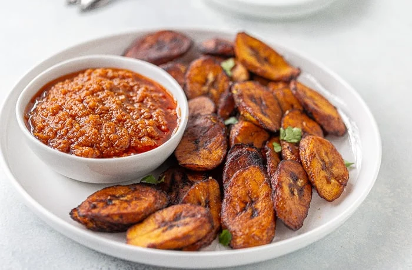

Fried Plantain

Description
Fried plantain is a staple in many homes all over the world. From the Carribeans to the
coasts of Africa, fried plantain is a side dish that lends sweetness to all dishes it accompanies.
Ingredients
- Cooking oil.
- 3 ripe plantains.
Steps
- Peel three ripe plantains and cut either diagonally or into cubes.
- Add some oil to a frying pan and heat at medium low for about two minutes.
- Add some pieces of the plantain to the pan.
- Fry until golden and turn the other side.
- Turn down the heat once both sides are golden brown and take out the plantains.
- Add the next batch to the oil and keep frying until you're all done.
- Serve when cool with a side of rice, beans, soup or some stew.
Return Home